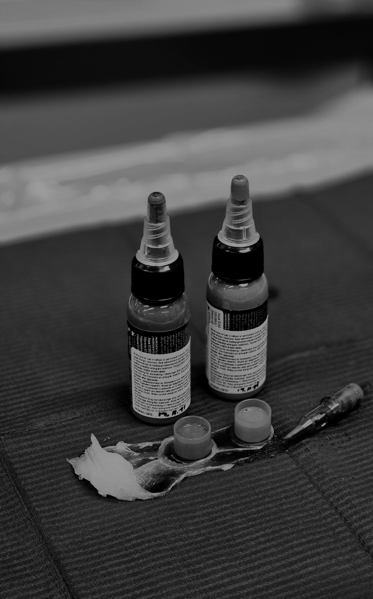

<ion-content class="bg-slate-950">
  <div class="min-h-full flex flex-col">
    <div class="relative h-1/2 overflow-hidden">
      <div class="absolute inset-0 bg-gradient-to-b from-slate-950/60 via-slate-950/80 to-slate-950 z-10"></div>

      <!--Background img-->
      

      <!-- Logo and header-->
      <div class="relative z-20 flex flex-col items-center justify-center h-full px-6">
        <div class="w-62 h-62 mb-6 rounded-full backdrop-blur-sm flex items-center justify-center">
          
        </div>
        <h1 class="text-neutral-50 mb-2">ATRA</h1>
      </div>
    </div>

    <!-- Content Section -->
    <div class="flex-1 flex flex-col justify-between px-6 py-8">

      <div class="space-y-4 max-w-md mx-auto w-full">
        <div class="flex items-start gap-3">
          <div class="w-8 h-8 rounded-full bg-slate-800 flex items-center justify-center flex-shrink-0 mt-0.5">
            <svg class="w-4 h-4 text-neutral-400" fill="none" stroke="currentColor" viewBox="0 0 24 24">
              <path stroke-linecap="round" stroke-linejoin="round" stroke-width="2" d="M5 13l4 4L19 7"></path>
            </svg>
          </div>
          <div>
            <p class="text-neutral-50">Track your ink inventory</p>
            <p class="text-neutral-500">Keep all your inks organized in one place</p>
          </div>
        </div>

        <div class="flex items-start gap-3">
          <div class="w-8 h-8 rounded-full bg-slate-800 flex items-center justify-center flex-shrink-0 mt-0.5">
            <svg class="w-4 h-4 text-neutral-400" fill="none" stroke="currentColor" viewBox="0 0 24 24">
              <path stroke-linecap="round" stroke-linejoin="round" stroke-width="2"
                d="M12 9v2m0 4h.01m-6.938 4h13.856c1.54 0 2.502-1.667 1.732-3L13.732 4c-.77-1.333-2.694-1.333-3.464 0L3.34 16c-.77 1.333.192 3 1.732 3z">
              </path>
            </svg>
          </div>
          <div>
            <p class="text-neutral-50">Stay informed on recalls</p>
            <p class="text-neutral-500">Get notified about safety recalls instantly</p>
          </div>
        </div>

        <div class="flex items-start gap-3">
          <div class="w-8 h-8 rounded-full bg-slate-800 flex items-center justify-center flex-shrink-0 mt-0.5">
            <svg class="w-4 h-4 text-neutral-400" fill="none" stroke="currentColor" viewBox="0 0 24 24">
              <path stroke-linecap="round" stroke-linejoin="round" stroke-width="2"
                d="M9 12l2 2 4-4m6 2a9 9 0 11-18 0 9 9 0 0118 0z"></path>
            </svg>
          </div>
          <div>
            <p class="text-neutral-50">Keep your clients safe</p>
            <p class="text-neutral-500">Keep up with what inks you used on your customers</p>
          </div>
        </div>
      </div>

      <!-- Get Started Button -->
      <div class="max-w-md mx-auto w-full">
        <app-login></app-login>
      </div>
    </div>

    <!--
    <div class="w-full bg-slate-900 text-neutral-50 font-lato text-lg px-18 py-4 px-4 my-4 rounded-2xl text-center">
      <p class="text-slate-100">
        Atra was designed to make safe and sustainable reporting easily
        accessible for tattoo artists in Finland. The software provides a tool
        for an improved ink traceability, leading to increased reporting levels
        and customer safety. Get started with your journey today!
      </p>
    </div> -->

  </div>

  <!-- <button (click)="navigateToMain()" class="p-2 bg-slate-700 rounded-lg">DEV: Quick access to main page</button> -->
</ion-content>